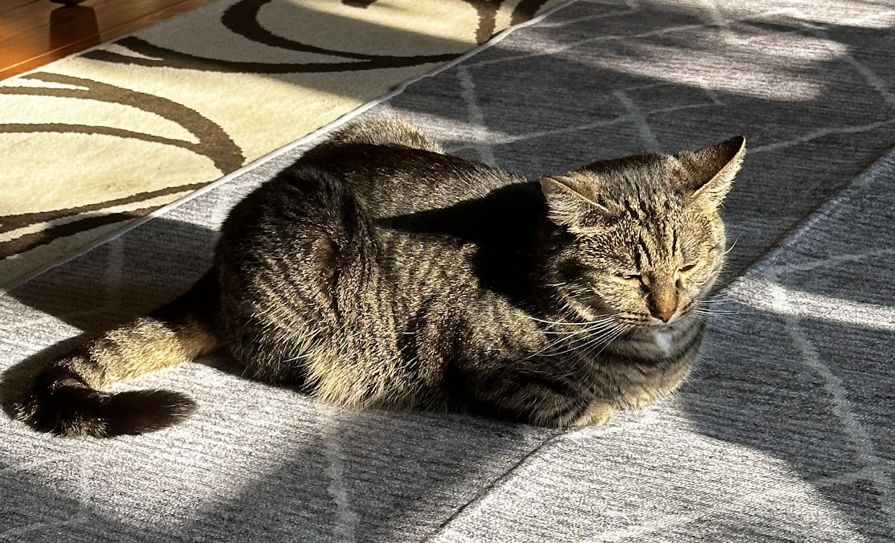
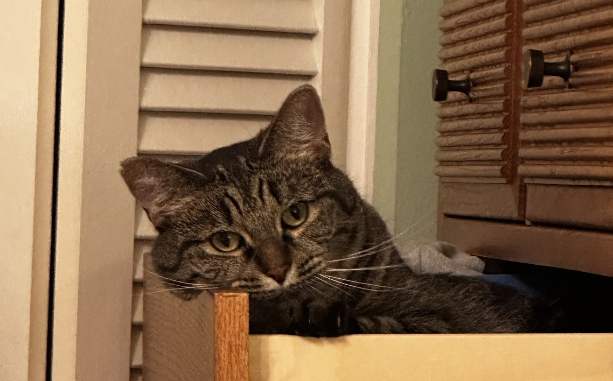
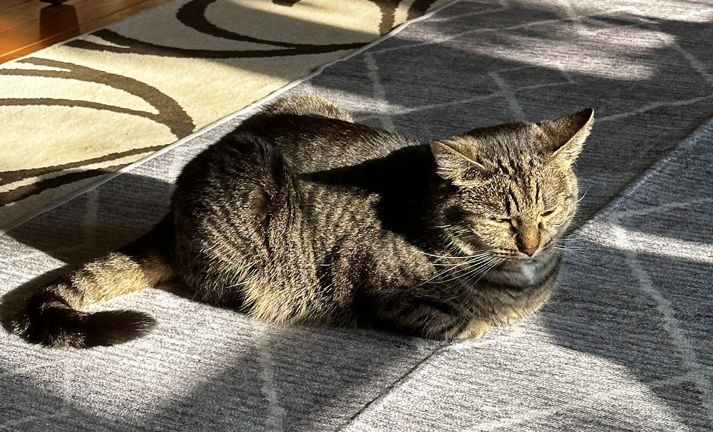
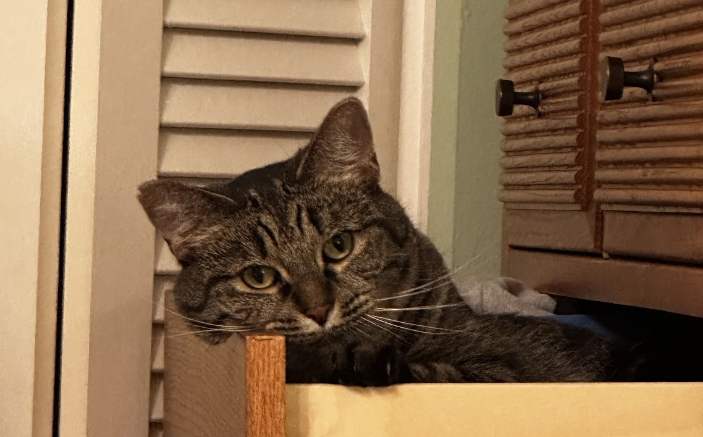

Pets
Leo

Guinea pigs are a naturally energetic animal, who spend up to 20 hours a day awake. Despite being awake for long periods of time, they naturally hide in their habitats, and can be difficult to see in their inclosures. Guinea pigs naturally are social creatures that enjoy socializing with other guinea pigs, in the wild they form packs of five to ten.
Leo is a half-lazy, half-lively guinea pig that either likes to run around on the floor, doing tiny hops, or likes to lay down in the cage for hours at a time nibbling at hay. His favorite hobby is eating, and he can tell whenever someone is about to give good to him by waiting at the end of the cardboard box patio he has attached to his cage.
Photo Gallery


Likes
- Lettuce
- Tiny Hops
- Nap Time
Riley

Riley is a 2yr old goldendoodle. He is very active and loves attention. Riley can be pretty mischievous; as such, his favorite activity is begging for (or stealing) food, however getting cuddled on a cool floor comes as a close second. In addition, Riley loves to walk in his local park or hang out with his best friend Cosmo.
Riley would NOT survive in the wild. He is very stubborn, jealous, and pampered. He’s currently in his “terrible twos,” and must get everything his way. That said, Riley is loved by his family as a perfect, funny, and loyal dog.
Photo Gallery


Likes
- Sneaking onto the couch
- Being grumpy after naps
- Peering onto kitchen countertops
Bacon Q Dog

Bacon Q. Dog is a 9yr old labradoodle. He prefers to spend his days lounging among the three different beds/couches that his family has gifted him. He enjoys a walk or two around the neighborhood, as long as he can pretend that he doesn't see any of the other animals to avoid the embarrassment of not wanting to admit he has no wolf-like skills in chasing them.
At night just as the rest of the family is ready to relax, Bacon suddenly wants to release all of his energy. He will place his toys on a mini couch and frantically drag the couch around, giving his toys "a ride." There is also a lot of rolling. Lots and lots of rolling.
Photo Gallery


Likes
- Belly rubs
- Playing tug-of-war
- Sneaking onto the couch
Cheeto (Chicken)
Cheeto is a cat who likes to eat a lot and play a lot. He has an obsession with his grandpa (human) and tries to get outside every single day. If he isn’t causing problems, he is usually hiding in a seven foot tall cat tree and sleeping.
Another name for Cheeto is Chicken, because sometimes he sits very scrunched up and ends up looking like a rotisserie chicken. He was nicknamed this by one of his friends, and now he understands it as his own name. He is about six years old and still acts like a younger cat, despite being middle-aged.
Photo Gallery


Likes
- Treats
- Exploring
- My Dad
MiaoMiao

MiaoMiao is the best cat in the world, extremely social with other, and vigilant against strangers. Oftentimes you can find her running around the house looking for things to eat. If she consumed anything other than cat food, she immediately throws up.
She is chill and chirpy. Loves to play with anything other than professional cat toys. Also loves sitting on keyboards and joining Zoom calls.
Photo Gallery

 



Likes
- Birds
- Ping-pong Balls
- Sleeping
Cooper

Cooper is an 8yr old border collie and lab mix. We rescued him from the Humane Society as a puppy! He loves going on long walks/runs, but he stops to sniff something every few steps. He’s pretty friendly, but he loves to loudly bark at delivery people who ring the doorbell.
Whenever it’s movie night, Cooper has to join on the couch/bed or he feels left out. He loves to cuddle and pats on his tummy. Cooper will play fetch for about 2 or 3 rounds, but he quickly gets bored. He leaves his toys all around the house for the rest of the family to find.
Photo Gallery


Likes
- Peanut butter
- Going on long walks
- Sleeping
Kui

Kui is a 2 years old cat. All he do is sleep and eat :) He is a huge foodie, he loves shrimp the most, he likes to eat grass for his digestion.
My mom found him on the street near my neiborhood. It was a cold windy night, he could have died in that winter night if my mom haven't found him.
Photo Gallery


Likes
- Shrimps
- Fly shape cat teaser
- Dui's plush kennel
Kaguya the Grey Long-haired
Kaguya is a 6-year-old grey long-haired beauty with a royal demeanor. Her graceful presence fills any room she enters, and her luxurious fur, reminiscent of a snowy winter day, invites gentle strokes from those she deems worthy.
When the evening comes and the household calms, Kaguya turns into a playful sprite. The flicker of a shadow or the rustle of a paper can turn into an exciting game for her.
Photo Gallery


Likes
- Listening to classical music
- Staring contests with the local birds
- Feeling the cool breeze on her fur during window-gazing sessions
- The scent of fresh catnip
- Mystical midnight adventures in the house